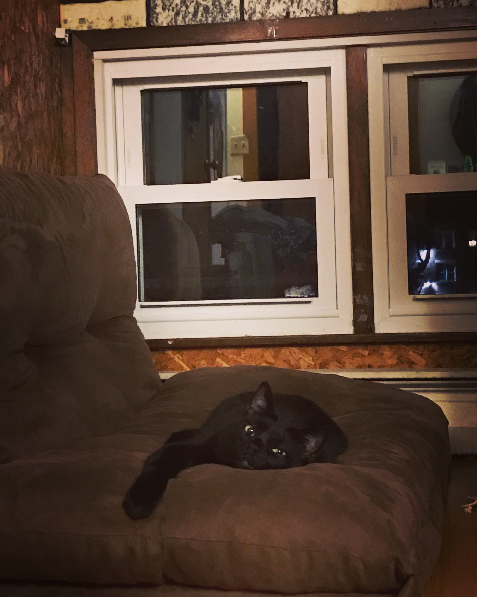

This is the homepage to my website, a personal project that is for
nothing more than personal enrichment. Maybe once I get handy with
website creation I will blog about other computer projects I am
working on and post things that I think are cool.

| Name |
Type |
Color |
Notes |
| Mugen |
Bombey |
Black |
The coolest cat |
Sourdough Bread
Tools and Ingredients:
- Glass Container - 3/4 to 1 L (loose fitting lid)
- Rubber Spatula
- Kitchen Scale
- Organic Unbleached Stone Rye Flour
- Organic Unbleached All-Purpose Flour
Steps:
Creating the Monster
- Write down and record the weight of the jar (without lid if lid removable)
- Add 100g of rye flour
- Add 150g of lukewarm water (about 85 degrees F)
- Vigorously stir until everything is incorporated
- Cover with loose lid and label with date started
Feeding the Monster
Day 2 & 3
- Leave 70g of mature starter behind, toss the rest (this is why we took jar weight)
- Add 50g of Stone Ground Rye Flour, and 50g of the unbleached all-purpose flour
- Add 115g of lukewarm water (85 degrees F)
- STIR
Day 4 and 5 - Drop Water Content
- 70g of mature starter
- 50g of stone ground rye
- 50g of unbleached all-purpose
- 100g of lukewarm water at 80 degrees F
Day 6 - Drop Mature Content
- 50g of mature starter
- 50g of stone ground rye
- 50g of unbleached all-purpose
- 100g of lukewarm water at 80 degrees F
Day 7 - Drop Mature Content (Again)
- 25g of mature starter
- 50g of stone ground rye
- 50g of unbleached all-purpose
- 100g of lukewarm water at 80 degrees F
- Repeat the process of day 7 feeding FOREVER
Notes
- If you forget to feed for a day or two it will be ok
- Feeding every 24 hours is perfectly acceptable, every 12 hours is better